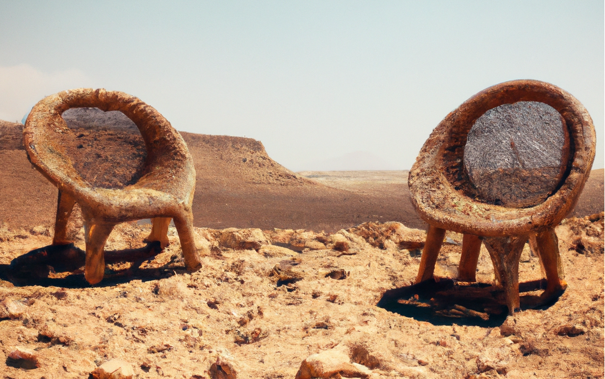
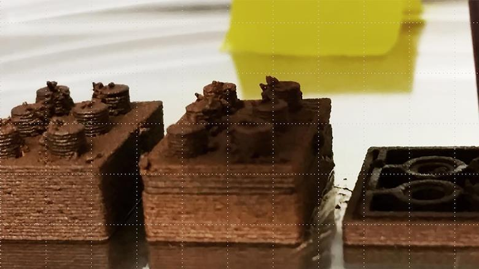
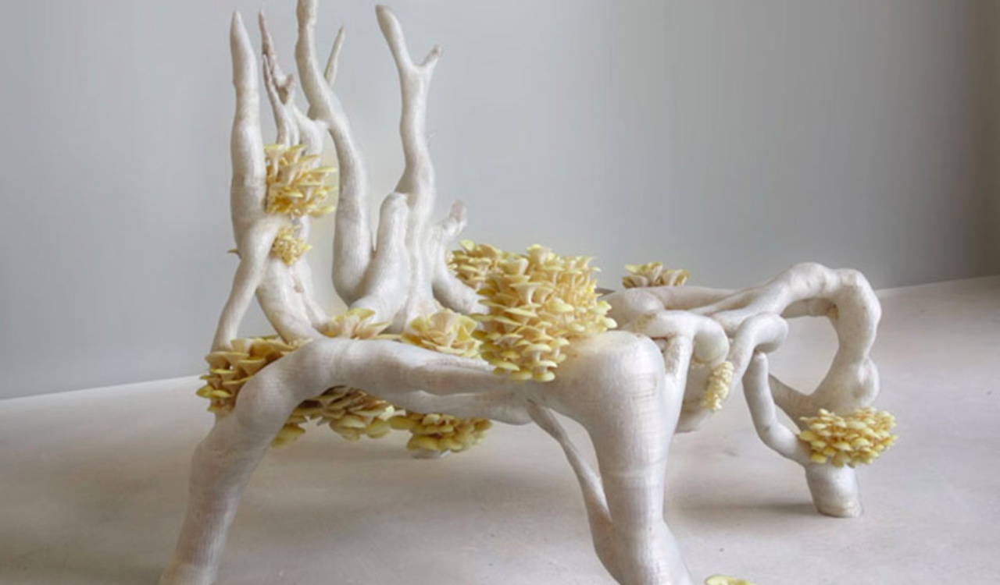
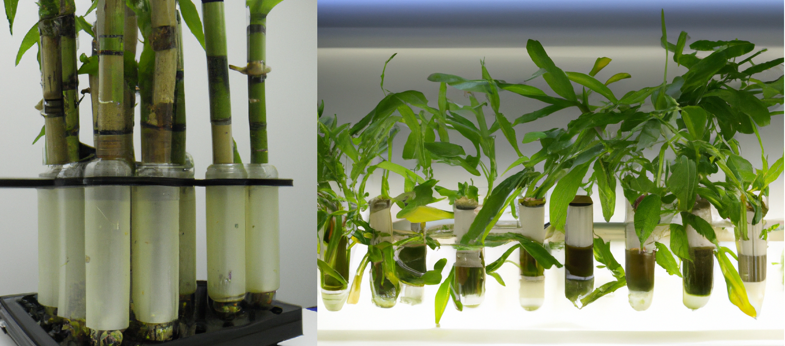
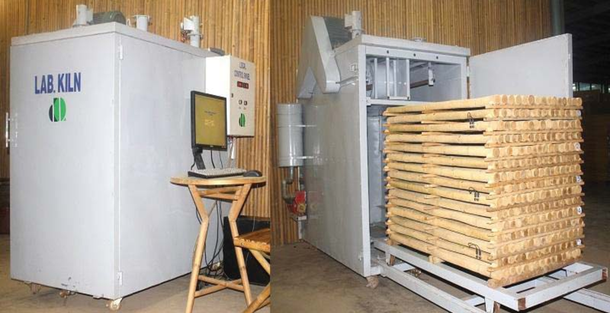
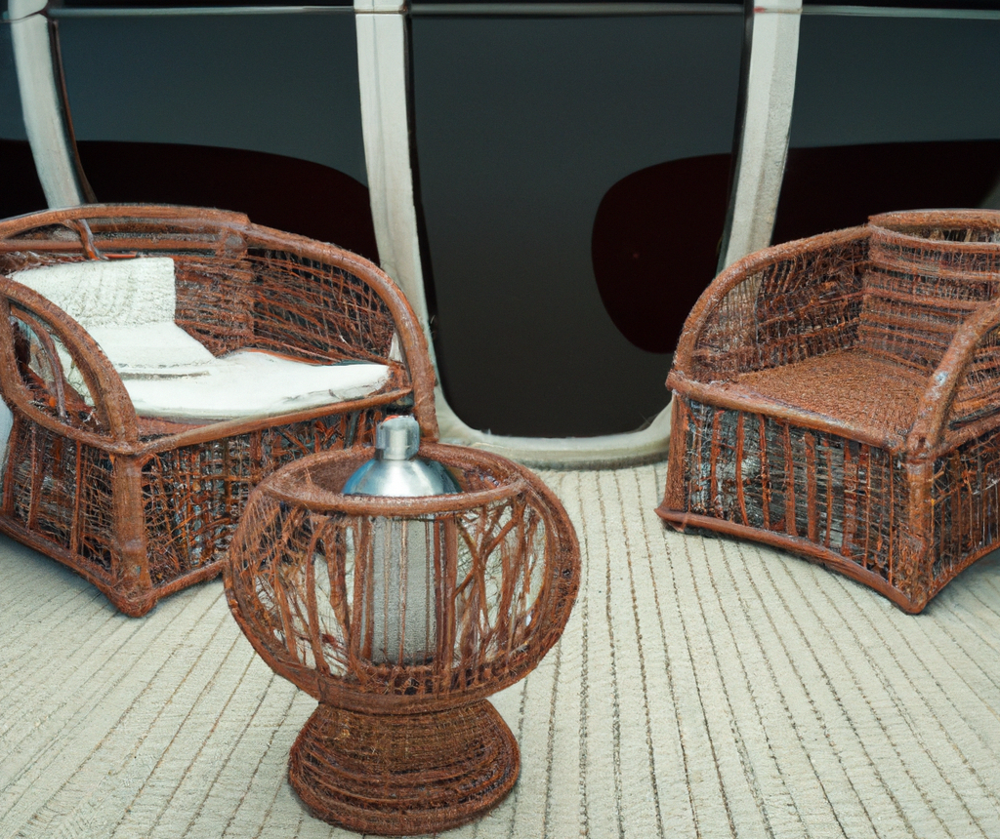

Mars will have a lot of wicker furniture
 Mars wicker chairs - DALL-EWhere are we gonna sit?
So we've landed on Mars, now we need somewhere to sit. It's pretty expensive to ship furniture from earth, so time to start building some chairs with all of the bountiful resources available on Mars. (gestures at empty desert)
There's plenty of speculation on how we will end up building on Mars, but I feel one of the more simple and obvious ideas has been left out: Bamboo / Wicker Furniture.
- Fast growing
- Reed/Bamboo can grow 12" per day.
- Water neutral
- 90%+ water reclaimed in drying process.
- Compostable
- Old/damaged furniture returned to system.
- Moderate energy requirements
- Grow lights & kiln drying.
- It comes in the right shape!
- No 3D printing or injection molding required. Just cut and bend to desired shape.
Turns out space will look a lot less like Startrek, and a lot more like your grandma's sitting room. It may not be the sexiest Martian engineering strategy, but it's the one that will work!
Can't we build with Martian regolith?
 Adam Jakus / Ramille Shah / Northwestern UniversitySure! Martian regolith construction seems pretty promising. But two major shortfalls:
- The massive amount of energy required to smelt down the ore
- Humans don't want to sit on radioactive concrete chairs all day
Manufacturing with Martian regolith involves using the raw materials found on the surface of Mars to produce useful goods and materials for human settlements. Regolith can be used to create 3D printed structures, solar panels, and even rocket fuel. The ability to manufacture on Mars reduces the need for costly and difficult transportation of materials from Earth and could make long-term human settlements on the Red Planet more feasible.
What about bioplastics?
 Studio Eric Klarenbeek bioplastic chairBioplastics are another great option, but with a few limiting factors for chair production.
- Bioplastics will be a precious commodity for replacing small parts throughout the station
- Large plastic extrusions require a lot of heat and heavy custom dies
The basics of bioplastic engineering:
- Grow some corn (and eat the good part)
- Take the leftovers cobs, leaves, and stalks to grind down and make vegetable oil
- Process the vegetable oil into Polylactic Acid (PLA)
- Injection mold or 3d Print using the bioplastics
Likely bioplastics will be integral to the continued survival of a Martian colony. But production of bioplastics is costly from both a raw material standpoint (crops that could otherwise be eaten), and a processing perspective (uses up reagents that would not be immediately replenishable on Mars). It is more reasonable to assume that bioplastic production will be reserved for small mission critical replacement parts.
Bamboo to the rescue
 Hydroponic bamboo sprouts  Kiln drying bambooLooking for something that can be produced quickly (up to a foot a day) and largely resembles the final product anyway. Look no further!
Reed (Phragmites) & Bamboo (Bambusoideae)
 Wicker chairs on spaceship - DALL-E